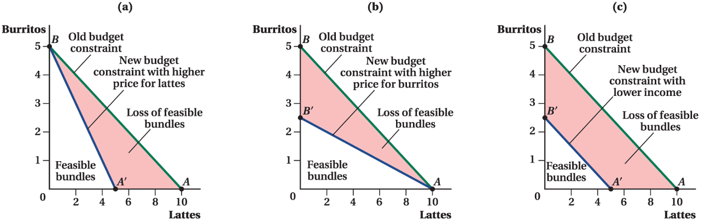
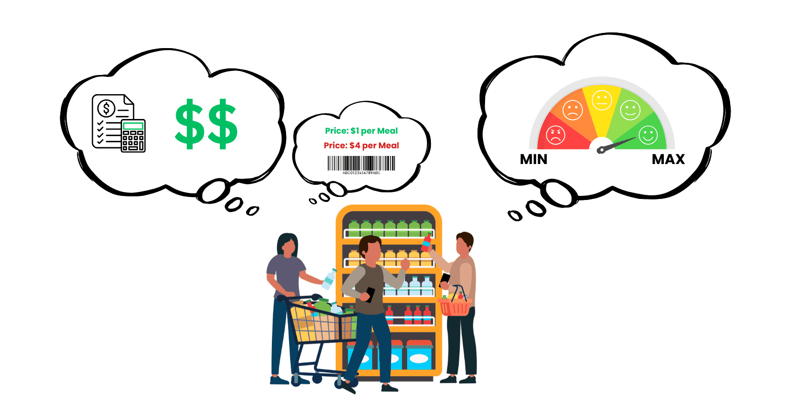
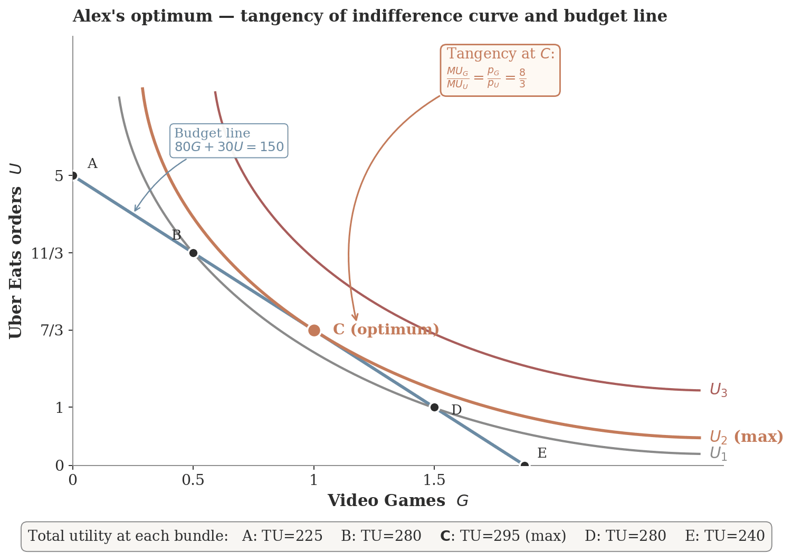
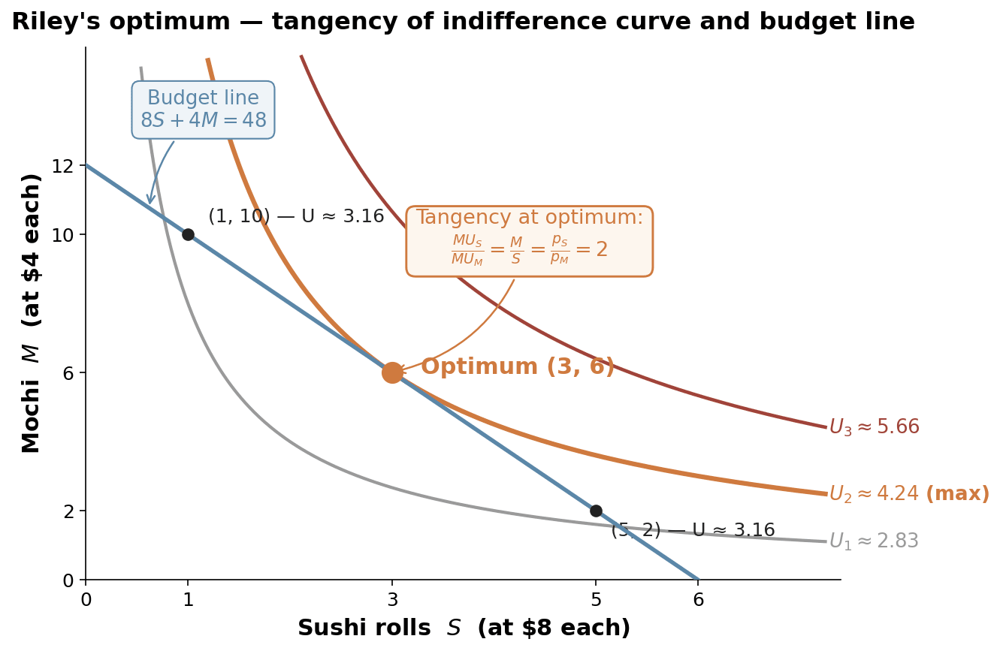
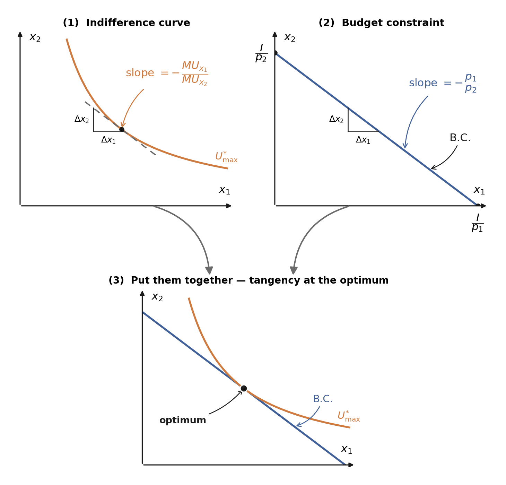
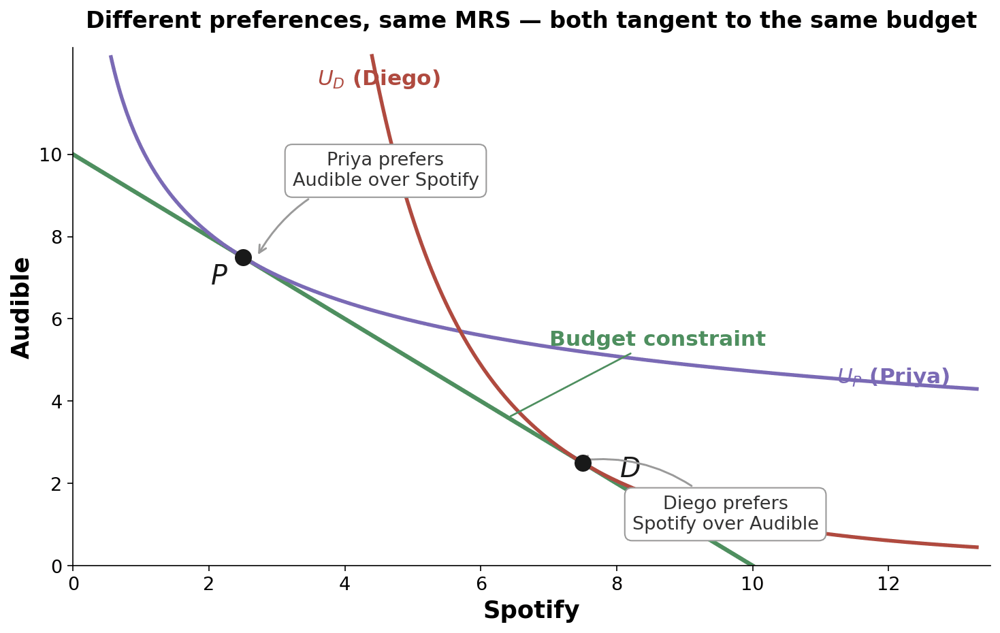
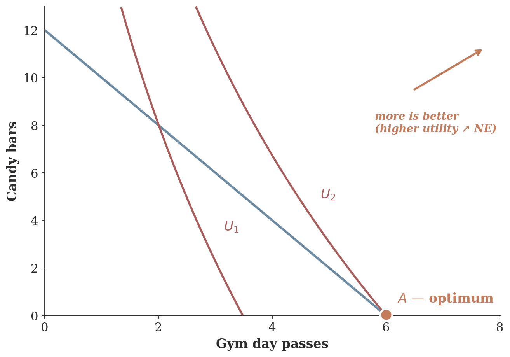
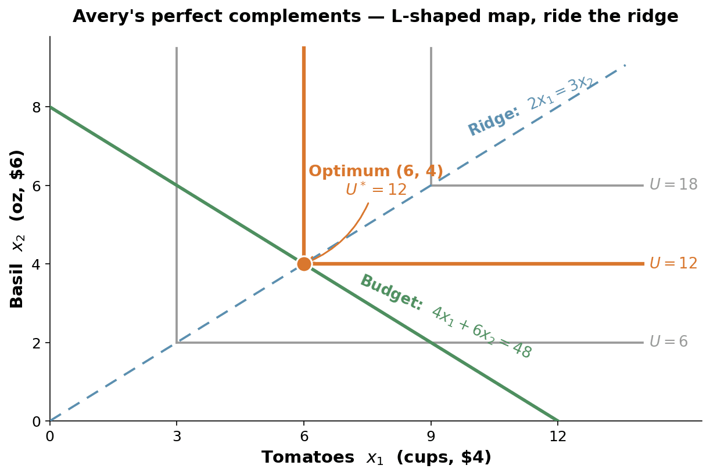
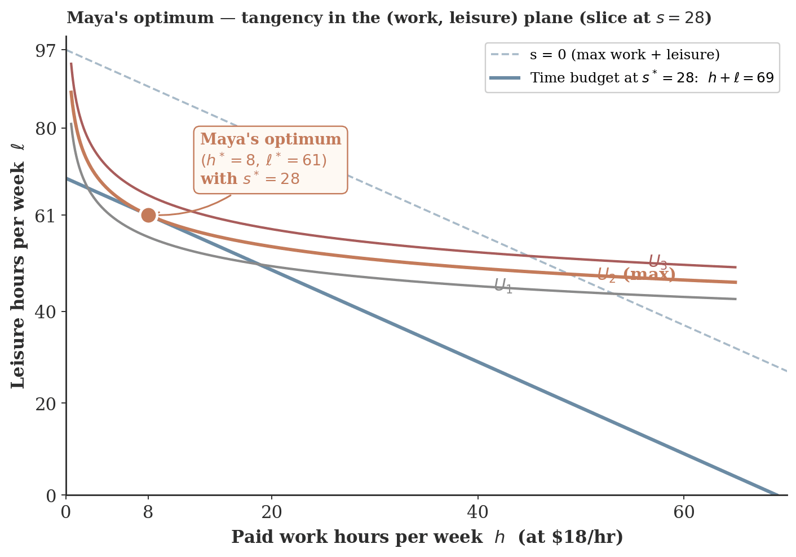
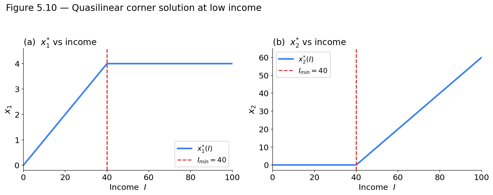

From bent budget lines to the Lagrangian — six closed-form demand systems, a kink that costs the federal government \$70B per year, and a multiplier borrowed from celestial mechanics.
Dr. Richeng Piao
Department of Economics
Northeastern University
Learning Objectives
By the end of class today, you will be able to…
5.1
Formalize the budget set \(B(p, I)\) and the budget constraint; predict the rotation/shift caused by price and income changes. (Bloom L3)
5.2
State and derive the two equivalent FOCs of an interior optimum: \(\mathrm{MRS} = p_1/p_2\) and \(MU_1/p_1 = MU_2/p_2 = \lambda\). (Bloom L4)
5.3
Set up and solve the Lagrangian \(\mathcal{L} = U + \lambda(I - p_1 x_1 - p_2 x_2)\); interpret \(\lambda^*\) as the marginal utility of income (utils/\$). (Bloom L4)
5.4
Derive closed-form Marshallian demand for the four canonical utility families — Cobb-Douglas, perfect substitutes, perfect complements, quasilinear. (Bloom L4)
5.5
Diagnose corner solutions and kinked-budget optima (KKT preview); apply to labor-leisure, ACA APTC, and SNAP. (Bloom L5)
One student, one household: the same problem
Student or household, the problem is the same: make the best choice the budget allows.
You · \$200 a month for fun
Netflix Premium
$25.10
Spotify Individual
$12
Gym membership
$50
Night out with friends
$30
Concert ticket
$128 avg
Every choice has an opportunity cost: an extra night out is a gym month you did not buy.
The average U.S. household · \$78,535 a year
Housing
33.4%
$26,266
Transportation
17.0%
$13,318
Food
12.9%
$10,169
Insurance & pensions
12.5%
$9,797
Healthcare
7.9%
$6,197
Entertainment
4.6%
$3,609
All other
11.7%
$9,178
Housing, transport and food take ~63% before any free choice begins.
Same two ingredients at every scale: what you can afford (the budget set) + what you want (preferences, Ch 4) → the best affordable bundle. Today: the first half.
Household data: U.S. BLS, Consumer Expenditure Surveys, 2024. Prices: typical 2025 list prices.
opportunity cost · budget set · constrained optimization
How Do U.S. Households Spend Their Budget?
The average U.S. household spent $78,535 in 2024. Housing + transportation alone took up roughly half of the budget.
Category
Share
Spending
Housing
33.4%
$26,266
Transportation
17.0%
$13,318
Food
12.9%
$10,169
Insurance & pensions
12.5%
$9,797
Healthcare
7.9%
$6,197
Entertainment
4.6%
$3,609
All other
11.7%
$9,178
The big-three squeeze
Housing (33%), transport (17%), food (13%) absorb ~63% of the average household’s budget — almost all of it goes to necessities before any discretionary choice begins.
What this means for the model
A real household’s “budget” for two-good choices is the slice left after fixed obligations. We model it with a small income (e.g. Maya’s $16/week) to keep the math clean.
15 min · What the consumer can afford — and why real budgets bend
The budget constraint — Maya’s weekly food
The slope is the relative price: the market’s rate for trading ramen for pizza, not Maya’s taste.
Budget constraint: all combinations of two goods a consumer can afford, given income and prices.
Maya has \$16 a week. Ramen \$1 a pack, pizza \$4 a slice:
\(1 \cdot Q_R + 4 \cdot Q_P = 16\)
All ramen: 16 packs. All pizza: 4 slices.
Slope = relative price. Ramen across, pizza up: \(\text{slope} = -\dfrac{P_R}{P_P} = -\dfrac{1}{4}\). One more ramen costs ¼ slice; read the other way, one slice costs 4 ramen.
A price trade-off, not a preference trade-off. The market sets this rate; Maya cannot change it. Her own willingness to trade is her MRS (Ch 4). §5.2: the best bundle is where the two agree, \(\mathrm{MRS} = P_R/P_P\).
Maya’s is \(B(1, 4, 16)\). The \(\mathbb{R}^2_{+}\) says no negative quantities; the boundary (\(=\)) is the budget constraint; its slope \(-p_1/p_2\) is the relative price.
budget set · slope-intercept form
What moves the budget line
Income shifts the line parallel; one price rotates it around the other good’s intercept.
1 · Income changes
Both intercepts \(I/p\) scale together. Parallel shift, slope unchanged.
2 · One price changes
Its own intercept moves; the other stays. Pivot, and the slope \(-p_R/p_P\) changes.
parallel shift · pivot · intercept
Poll #1: Maya’s money doubles — and so does ramen
Maya’s food money doubles, from \$16 to \$32. At the same time ramen doubles, from \$1 to \$2 a pack. Pizza stays at \$4 a slice. What happens to what she can afford?
A) She can afford more of both goods, even at the extremes
B) Everything grows evenly: same trade-off, just more of both
C) Nothing changes: the same choices as before
D) All-ramen stays the same, but she can afford twice as much pizza
60 sec to vote
Answer D — all-ramen stays at 16, all-pizza doubles to 8
Answer D: the all-ramen amount stays put and the all-pizza amount doubles, because pizza’s price did not rise with her money.
The trap is C. If pizza had doubled too, nothing would change — that is the next slide. But pizza did not: it got relatively cheaper, so the line pivots around all-ramen and gets steeper.
Three changes to Maya's budget constraint

(a) \(2 \times p_L\) (lattes)
\(Q_B = 5 - \tfrac{1}{2} Q_L\)
\(\to \;\; Q_B = 5 - Q_L\)
Pivot around \(B\); \(A \to A'\); slope steepens.
(b) \(2 \times p_B\) (burritos)
\(Q_B = 5 - \tfrac{1}{2} Q_L\)
\(\to \;\; Q_B = 2.5 - \tfrac{1}{4} Q_L\)
Pivot around \(A\); \(B \to B'\); slope flattens.
(c) \(\tfrac{1}{2} \times\) Income
\(Q_B = 5 - \tfrac{1}{2} Q_L\)
\(\to \;\; Q_B = 2.5 - \tfrac{1}{2} Q_L\)
Parallel inward shift; same slope.
Comparative static: price rotation
A rise in \(p_1\) rotates the line inward around the \(x_2\)-intercept, and the line gets steeper.
\(p_1\) rises with \(p_2\) and \(I\) held fixed:
\(x_1\)-intercept \(I/p_1\) falls — constraint pivots inward along the \(x_1\) axis.
\(x_2\)-intercept \(I/p_2\) unchanged — pivot point is on the \(x_2\) axis.
Slope \(-p_1/p_2\) becomes more negative — constraint is steeper.
Price rotation = same income, different relative prices ⇒ the menu of feasible trade-offs changes.
Intercepts: \(A = (0, 5)\), all deliveries; \(B = (150/80, 0) = (1.875, 0)\), all games. Slope \(-p_G/p_U = -80/30 = -8/3 \approx -2.67\): one game costs \(8/3\) deliveries.
(b) One game
\$80 on the game leaves \$70. \(U = 70/30 = 7/3 \approx 2.33\) deliveries.
\(C = (1,\, 7/3)\)
Context: in 2024 the average U.S. household spent \$78,535 (BLS CEX), 4.6% of it on entertainment.
Walkthrough 5.1 (c) — the Steam sale: games \$80 → \$50
Before: \$80
After: \$50
Constraint
\(80G + 30U = 150\)
\(50G + 30U = 150\)
All deliveries (A)
\(5\)
\(5\) unchanged
All games
\(B = 1.875\)
\(D = 150/50 = 3\) rises
Slope
\(-8/3 \approx -2.67\)
\(-5/3 \approx -1.67\) flatter
A game now costs only \(5/3\) deliveries.
Geometric reading. The line pivots outward around \(A\), the intercept whose price did not change, opening the triangle \(ABD\) of newly affordable bundles.
Takeaway. The slope is \(-p_G/p_U\) whatever the income: income shifts the line parallel, prices rotate it.
Walkthrough 5.1 — Alex’s budget, live
Game price
Games bought, G
pivot · newly feasible bundles
Lin’s API budget: where the kink comes from
A volume discount kinks the budget line outward where the cheaper price starts: here at (3, 5).
Lin has \$30 a week · energy drinks \$5 · API tokens \$3/M for the first 5M, then \$1.50/M (Batch).
first 5M at \$3 = \$15 · every token after that at \$1.50
Step 3 · which applies?
Standard for \(T \le 5\), Batch for \(T > 5\). They cross at \(E = 3,\ T = 5\): \$15 spent on tokens.
Step 4 · the real budget
Keep the piece that applies on each side: Batch above the kink, standard below.
Step 5 · what the discount buys
The wedge: bundles out of reach at \$3/M. Same shape as AWS tiers, Costco bulk, tiered electricity.
kink · Batch API · piecewise
Lin’s budget, live
Energy drinks, E
Preview of §5.5. Compare MRS = MUE/MUT with 5/3 on the standard piece and 10/3 on the Batch piece to see which piece, or the kink, wins.
kink · piecewise budget line
What if Lin’s API is rate-capped?
A quantity cap flattens the budget at the cap: bundles she can afford but is not allowed to buy.
Energy drinks, E
Same \$30, same prices — but a 5M-token weekly rate limit. Income and prices did not change; a rule did.
Flat at the cap
For \(E \le 3\) the line is horizontal at \(T = 5\): no more tokens, however much money is left.
Affordable, not allowed
The pink triangle: the Batch bundles she could pay for, blocked by the rule.
Money left over
On the flat top \(5E + 3T < 30\): at (1.5, 5) she has \$7.50 unspent. Why will she never stop there? (§5.2)
rate limit · quantity restriction
Other real-world kinks — four shapes
With a kinked budget, solve on each smooth segment, then compare those candidates with the kink point.
Good 1, x
Same recipe every time. Solve on each smooth piece, then compare those candidates with the kink (§5.5).
APTC · SNAP · in-kind transfer
§5.2 The Consumer’s Problem and the Tangency Condition
15 min · Two ways to write one optimum: slope form and ratio form
How does she actually choose?
Ch 4 said what she likes. §5.1 said what she can afford. Neither alone picks a bundle.
§5.1 · What she can do
The account and the price tag — the two bubbles on the left. Together, the budget constraint.
\(p_1x_1 + p_2x_2 \le I\)
a fact about the world

Ch 4 · What she wants
The satisfaction gauge — the bubble on the right. That is utility; the MRS is its slope.
\(\max\; U(x_1,x_2)\)
a fact about her
Put the two together and exactly one bundle survives: Marshallian demand, \(x^*(p_1,p_2,I)\) — the bundle that maximises \(U\) subject to the budget. Everything in §5.2 is a way of locating it.
Your preferences, meet your budget
Whose preferences
Loading the class’s answers…
1 · Climb the map
🙂
2 · Now reality
price of x$1price of y$4income$16
Application — choosing a cloud storage plan
Equimarginal in plain English: the "sweet spot" is the plan where the last dollar still buys utility. Lowest price per GB ≠ best value — paying for empty space yields zero marginal utility.
High utility for essential phone/photo backup — nearly all 50 GB gets used.
Google One (2 TB)
\$9.99/mo
60 (low value)
Cheapest \$/GB on paper, but the typical user fills < 5%. Paying for empty space yields \(\approx 0\) MU.
Price per GB: iCloud+ \(\approx\)\$0.020 · Google One \(\approx\)\$0.005 (lowest) — yet not the best value.
Optimization logic
The "sweet spot" is NOT the lowest price per unit.
It is the plan where the utility of the storage you actually use justifies the marginal dollar spent — pick the highest \(MU/\$\).
Same rule, new setting: Just as the optimum required \(MU_1/p_1 = MU_2/p_2\), the right plan equates \(MU\) per dollar across all spending options — not just cloud tiers, but everything else in the budget (groceries, streaming, etc.).
Geometric view — tangency at Alex's optimum
Tangency and equal MU per dollar are one condition, written two ways.

What the picture shows
Alex splits a \$150 entertainment budget between video games (\(p_G = \$80\)) and Uber Eats orders (\(p_U = \$30\)). The budget line intersects three indifference curves. The highest one Alex can reach while staying on the budget is \(U_2\) — tangent at Point \(C\).
Tangency = Equimarginal
At \(C\), the IC and BC have the same slope: \(\;\dfrac{MU_G}{MU_U} = \dfrac{p_G}{p_U} = \dfrac{8}{3}.\;\) Rearrange: \(\dfrac{MU_G}{p_G} = \dfrac{MU_U}{p_U}\) — the equimarginal rule from a few slides back.
Why not B, D, or A/E? \(B\) and \(D\) sit on a lower IC (\(U_1\)) — affordable but suboptimal. \(U_3\) is higher but unreachable on $150. Only \(C\) is both affordable and on the highest reachable IC.
You Try — Riley's weekend in Boston
The problem
Riley spends her \$48 weekly fun budget on 🍣 sushi rolls (\(S\), \$8 each) and 🍡 mochi (\(M\), \$4 each). Her utility is Cobb-Douglas:
Answer: Riley buys 3 sushi rolls + 6 mochi. Check: \(8(3) + 4(6) = 24 + 24 = \$48\) ✓. Equimarginal: \(\tfrac{MU_S}{p_S} = \tfrac{MU_M}{p_M} \approx 0.09\) utils/\$ at the optimum. Next slide — see it on the graph.
Try on your own · 3 min · press → to step through the solution
Riley's optimum on the graph

What the picture shows
The budget line intersects three indifference curves. The highest one Riley can reach while staying on her \$48 budget is \(U_2 \approx 4.24\) — tangent at (3, 6).
Tangency = Equimarginal
Both curves have slope \(-2\) at the optimum: \(\;\dfrac{MU_S}{MU_M} = \dfrac{M}{S} = 2 = \dfrac{p_S}{p_M}.\;\) Same FOC as Alex on the previous slide — only the numbers change.
Other on-budget bundles lose: \((1, 10)\) and \((5, 2)\) both cost \$48 but sit on \(U_1\) (\(U \approx 3.16\)) — lower utility. Only the tangency point hits the highest reachable IC.
Formal consumer problem
The best affordable bundle exists, strict convexity makes it unique, and it defines Marshallian demand.
Geometric intuition. At a non-tangent point, the indifference curve crosses the budget line — slide along the budget line toward the steeper-IC side and the consumer reaches a higher curve. Tangency is the place where no such gain remains.
tangency condition
Tangency condition — slope form, drawn

Read it as a flow
(1) the indifference curve sets the consumer's trade-off, slope \(-MU_1/MU_2\) (the MRS). (2) the budget line sets the market's trade-off, slope \(-p_1/p_2\). (3) the best affordable bundle is where the two are tangent.
At any non-tangent point the indifference curve crosses the budget line — slide along the line toward the steeper-IC side and reach a higher curve. Tangency is where no such gain is left.
\(\lambda\) is the marginal utility of income
\(\lambda\) is the marginal utility of income: the extra utils from one more dollar, in utils per dollar.
If you handed the consumer one more dollar of income, how many additional utils would they extract from it (when re-optimizing)?
This is the envelope theorem — stated here, proved in Math Appendix A.6, and used again in Ch 8 on the cost side. \(v(p, I)\) is the indirect utility function: the value of \(U\) at the optimum, as a function of \(p\) and \(I\).
HU2 — Units matter.
\(\lambda\) is in utils per dollar, not utils, not dollars. Walkthrough W5.2 will produce \(\lambda^* \approx 0.10095\) utils/\$; Walkthrough W5.5 will produce \(\lambda^* = 12\) "dollars per discretionary hour" because the utility weights were chosen to make utils dollar-equivalent.
Why \(\lambda\) is interesting. It is the shadow price of the constraint — the value to the consumer of relaxing the budget by \$1. In production theory (Ch 8), the same multiplier becomes the firm's shadow value of a relaxed resource constraint.
marginal utility of income · envelope theorem · indirect utility function · shadow price
Different preferences, same MRS
What if two consumers have different preferences? Will they end up with the same MRS at their optimal bundles?
Yes — because they face the same ratio of prices.

Same budget, different ICs
Priya and Diego share the same income and prices — same budget line. But Priya's IC is flat (she loves Audible); Diego's is steep (he loves Spotify).
Different optimal bundles
Priya picks \(P = (2.5,\,7.5)\) — lots of Audible, few Spotify. Diego picks \(D = (7.5,\,2.5)\) — the opposite.
Same MRS at both bundles
At \(P\) and at \(D\), the IC is tangent to the budget ⇒ \(\mathrm{MRS} = p_S/p_A\) for both. Markets equalize the MRS across consumers, even when preferences differ.
A special case — corner solutions
So far every optimum has been interior — positive amounts of both goods. Sometimes the consumer spends everything on one good and zero on the other. That's a corner solution.

Allx (all X-axis good) — gym focus
Allx trains for the Boston Marathon. Budget \$36/week. Gym day passes \$6, candy bars \$3. Max affordable: 6 gym passes or 12 candy bars. NE = higher utility.
The optimum is at the corner
Highest reachable IC \((U_2)\) touches the budget at \(A = (6,\,0)\) — all gym, no candy. \(U_1\) is a lower IC that crosses the budget at suboptimal bundles like \((2,\,8)\).
No tangency: IC is steeper than BC at \(A\) (and everywhere). MRS \(= MU_G/MU_C > p_G/p_C = 2\). Even the first candy bar isn't worth the gym time given up. → tangency rule fails; we'll use KKT conditions (Part 3).
corner solution
§5.3 The Lagrangian Method
15 min · The auxiliary variable that does all the work
The Lagrangian
The Lagrangian’s first-order conditions give \(MU_1/p_1 = MU_2/p_2 = \lambda\) and the budget constraint.
Figure 5.1 — budget line, indifference curves, tangency point, and \(\lambda^*\).
Cobb-Douglas \(U = x_1^{1/3} x_2^{2/3}\), \(p_1 = 4,\ p_2 = 6,\ I = 60\): tangency at \((5,\, 20/3)\), \(\lambda^* \approx 0.10095\). Every number is derived in closed form in Walkthrough W5.2.
Misconception alert. The Lagrangian is not “utility minus a penalty for breaking the budget.” It is the device that locks in both the equimarginal condition (\(MU_i/p_i\) equal across goods) and the budget constraint at once — solving it just means writing down the three FOCs.
Here \(\lambda^*\) is the multiplier on the budget constraint — the same shadow value of income we met earlier (utils per extra \$1). That is why it rides on \(I - p_1 x_1 - p_2 x_2\): it prices how much relaxing the budget is worth.
Joseph-Louis Lagrange (1736–1813)
Giuseppe Lodovico Lagrangia — born in Turin, succeeded Euler at the Berlin Academy in 1766, at 30. Mécanique Analytique (1788) is the founding text of analytical mechanics.
The constrained-mechanics move
A particle constrained to a surface; a pendulum at fixed length. Introduce an auxiliary variable — the multiplier — that encodes the force the constraint exerts. The math: identical to \(\partial \mathcal{L}/\partial x_i = MU_i - \lambda p_i = 0\).
Hicks & Allen (1934) — tracing back to Slutsky (1915) — noticed the parallel. A consumer constrained to a budget line is mathematically identical to a particle constrained to a surface. Lagrange's "constraint force" became the economist's "marginal utility of income."
From the Mécanique preface
“No diagrams will be found in this work.”
A deliberate rejection of Newton's and Euler's geometric style: mechanics is a branch of pure analysis.
Goal: take Alex’s budget problem on games and Uber Eats (budget \$150, \(p_G = \$80\), \(p_U = \$30\)) and recover the optimum \((G^{\!*} = 1,\, U^{\!*} = \tfrac{7}{3})\) analytically — no enumerating bundles.
Setup — Cobb-Douglas with exponents calibrated to Alex's expenditure shares (\(\$80/\$150 = \tfrac{8}{15}\) on G, \(\$70/\$150 = \tfrac{7}{15}\) on U): \(U(G,\, U) = G^{8/15} \cdot U^{7/15}.\)
Same bundle we found earlier by table-enumeration, dollar-by-dollar buying, and the tangency picture — now derived analytically.
\(\lambda^{\!*}\): from FOCU, \(\lambda^* = \tfrac{MU_U}{30} = \tfrac{1}{30}\cdot\tfrac{7}{15}\,(\tfrac{3}{7})^{8/15} \approx 0.0099\) utils/\$ — the shadow value of \$1 of income at the optimum (the "marginal utility of income" idea from earlier).
Poll #2: Doubling utility
Suppose you re-label every utility number by doubling it: the new function is \(V(x_1, x_2) = 2 U(x_1, x_2)\). Same prices, same income. What happens to \(\lambda^*\) at the optimum?
A) \(\lambda^*\) doubles
B) \(\lambda^*\) stays the same (ordinal invariance)
C) \(\lambda^*\) falls by half
D) Cannot be determined without \(U\)
60 sec to vote
Answer: A — \(\lambda^*\) doubles
Answer A: doubling utility doubles \(\lambda^*\); the optimal bundle does not change.
New FOC: \(\partial V / \partial x_i = 2 \cdot MU_i = \lambda' p_i\). So \(\lambda' = 2 MU_i / p_i = 2 \lambda\). Bundle \((x_1^*, x_2^*)\) does not change — the FOC ratios \(MU_i/MU_j\) are invariant to monotonic transformations, so the optimum is the same. But \(\lambda\) carries units of utils per dollar — double the utility scale, double \(\lambda\).
Trap (B). Many students confuse "demand is ordinal-invariant" with "every Lagrangian-derived quantity is ordinal-invariant." Demand is; \(\lambda\) isn't. Units matter (HU2).
§5.4 Worked Examples — Four Canonical Utility Families
25 min · Six anchor walkthroughs, closed forms for every family
Walkthrough 5.2 — Cobb-Douglas: setup
The story — Devon's senior recital prep
Devon is a music major prepping for his senior recital. Weekly \$60 splits between sheet music (\(x_1\), \$4/piece) and studio practice time (\(x_2\), \$6/hr). His preferences favor practice over collecting scores.
Figure 5.5 — Cobb-Douglas demand at \(\alpha=1/3\).
General case (CC2): the same two moves with \(\alpha\) kept symbolic give \(x_i^*(p, I) = \alpha_i I / p_i\) — budget shares = exponents. Press ↓ for the derivation.
Calculus Corner CC2 — the general Cobb-Douglas closed form
In general \(x_1^* = \alpha I/p_1\) and \(x_2^* = (1-\alpha)I/p_2\): share times income, divided by own price.
Same two moves as the worked case — but keep \(\alpha\) symbolic. For \(U = x_1^{\alpha} x_2^{1-\alpha}\), \(\alpha \in (0,1)\):
and \(\lambda^* = \alpha^{\alpha}(1-\alpha)^{1-\alpha}\,p_1^{-\alpha}\,p_2^{-(1-\alpha)}\)
Constant shares. \(\dfrac{p_1 x_1^*}{I} = \alpha\) and \(\dfrac{p_2 x_2^*}{I} = 1-\alpha\) — identically, whatever the prices or income. Spending shares equal the exponents — the signature Cobb-Douglas prediction, and the easiest empirical test (→ TD1 / the CEX data).
Walkthrough 5.3 — Perfect complements: ride the ridge
Perfect complements have no FOC at the kink: solve the ridge and the budget together.
The story — Avery's home pasta nights
Avery cooks pasta dinners for her roommates every week. Each plate requires tomatoes (\(x_1\), \$4/cup) and fresh basil (\(x_2\), \$6/oz) in a fixed ratio — extra of either gets thrown out. Weekly grocery budget \$48.
Indifference curves are L-shaped — kinks along the ridge condition \(2 x_1 = 3 x_2\). The standard FOCs of \(\min\) don't exist at the kink, but the optimum is well-defined: nobody would ever buy extra of the good in surplus.
Lesson. Utility maximization is more general than the differentiable tangency condition. When tangency doesn't apply, use the geometry of the indifference map. Here: ride the ridge until you hit the budget.
ridge
Walkthrough 5.3 — Avery's map: ride the ridge to the budget

What the picture shows
Every indifference curve is L-shaped, and the corner of each L sits on the ridge \(2x_1 = 3x_2\). Along an arm, extra tomatoes or extra basil add zero utility — the surplus good is thrown out.
Why we “ride the ridge”
A rational buyer never sits on an arm — that spends money on a good that gets wasted. So the optimum must be a corner on the ridge, pinned down by two equations: ridge + budget.
The ridge crosses the \$48 budget at \((6,\,4)\) — the kink of the highest L the budget can reach, \(U^* = 12\). No tangency needed; the geometry hands you the answer.
Perfect substitutes: spend everything on the good with the higher marginal utility per dollar.
The story — Skylar's finals-week caffeine
Skylar pulls all-nighters in Snell Library during finals. She doesn't care where the caffeine comes from — only how much. Two options: cold-brew cans (\(x_1\), \$1, 2 mg of "alertness" each) and espresso shots (\(x_2\), \$2, 3 mg each). \$10 to spend.
Maya is a Northeastern student who freelances as a graphic designer at \$18/hour. After sleep and class, she has 97 discretionary hours per week to divide three ways:
\(g(s) = 0.2 s\) up to 30 hours (linear, \$12/hr at the margin), then flattens.
Lagrangian — one time constraint
\[\mathcal{L} = 60 g(s) + 96 \ln(18 h) + 732 \ln \ell + \lambda(97 - s - h - \ell)\]
The constraint says her three uses must add to 97 hours. \(\lambda\) here reads as "dollars per discretionary hour" — the value of one extra hour at the optimum.
Step 2 — \(h^*\) and \(\ell^*\) from the work + leisure FOCs
Derivative of the log — the constant inside drops out, since \(\ln(18h)=\ln 18+\ln h\): \(\dfrac{\partial}{\partial h}\,96\ln(18h)=\dfrac{96}{h}\), \(\dfrac{\partial}{\partial \ell}\,732\ln\ell=\dfrac{732}{\ell}\).
Regime check: \(s^* = 28 \leq 30\) ✓. ATUS 2024 ~21.7 hr/wk educational activities for full-time students — \(s^* = 28\) plausible for a freelance designer.

Figure 5.6 — Maya's three-use time budget.
Equimarginal check. \(\$12/\text{hr}\) at every margin: study (\$60 × 0.2), work (\$96/8), leisure (\$732/61). Same number everywhere — this is the equimarginal principle in dollar units.
ATUS
What if Maya's wage rises 33%?
Under log utility the wage cancels from the work FOC, so Maya’s hours do not change.
Suppose Maya gets a raise: \$18/hr → \$24/hr. How does her time allocation change?
Re-solve: the work FOC
New utility piece: \(96 \ln(24 h)\). The work FOC:
The wage cancels. The 24 in the numerator and the 24 inside the log cancel exactly. Result: \(\lambda^* = 12,\, h^* = 8,\, \ell^* = 61,\, s^* = 28\) — nothing changes.
Why? Two effects cancel
Substitution effect: each hour of work now buys more → work more
Income effect: Maya is effectively richer → take more leisure
In log-utility, these cancel exactly. Net change: zero. This is the signature of unit elasticity of substitution.
Is this realistic? No — real Frisch elasticities are around 0.3–0.5 (substitution dominates, people work a bit more when wages rise). Log utility is a useful baseline; Ch 6 swaps it for a more flexible form to match the data.
substitution effect · income effect · Frisch elasticity
Poll #3: Now Maya's wage triples — does the size matter?
You just saw a 33% raise leave Maya's hours unchanged. Now, in the same log utility \(U = 60 g(s) + 96 \ln c + 732 \ln \ell\), her wage triples: \$18 → \$54/hr. What happens to her optimal work hours \(h^*\)?
A) \(h^*\) rises (sub. effect dominates)
B) \(h^*\) falls (income effect dominates)
C) \(h^*\) unchanged (effects cancel)
D) Cannot be determined
90 sec to vote
Answer: C — still unchanged (the size doesn't matter)
C: under log utility the wage drops out, so any raise, 33% or 200%, leaves \(h^* = 8\).
The wage drops out of the work FOC: \(\ln c = \ln(wh) = \ln w + \ln h\), so \(\partial U/\partial h = 96/h\) — no \(w\) in it. Under log utility the substitution and income effects cancel for any wage change. 33% or 200%, \(h^*\) stays at 8: the size of the raise is irrelevant — the log structure is what matters.
Why empirics says A. Real labor-supply data (Sigurdsson 2025: Frisch elasticity ~0.4) shows hours rising with wage — substitution dominates. To get that in the Lagrangian, replace \(\ln c\) with \(c^{1-\sigma}/(1-\sigma)\) and \(0 < \sigma < 1\): consumption utility less concave than log lets the substitution effect win, so hours rise. (\(\sigma > 1\) does the opposite: hours fall.) Full Slutsky decomposition in Ch 6.
Sigurdsson
Walkthrough 5.6 — Quasilinear: zero income effect
The story — Jordan's concert tickets vs. everything else
Jordan has \$100 a month to split between live-event tickets (\(x_1\), \$10 each — the first few shows are a thrill, each extra one adds less) and money for all other goods (\(x_2\), the numeraire, \$1 = 1 util). When Jordan's income rises, the number of shows doesn't budge — the extra just spreads across everything else.
Crucially: \(x_1^*\) does not depend on \(I\). Double income to \$200 and \(x_1^*\) is still 4; \(x_2^*\) jumps to 160 — every extra dollar flows to other goods.

Figure 5.10 — quasilinear corner risk at low \(I\).
Why this matters. Quasilinear utility makes good \(x_2\) the numeraire that absorbs all income changes. This is the workhorse for partial-equilibrium welfare analysis (consumer surplus calculations in Ch 6 / Ch 11).
numeraire
§5.5–5.6 Corners, Kinks, and Applications
20 min · What happens when tangency fails — and where the kinks live in real policy
Three ways tangency fails — the diagnostic
Check each corner: if its good’s \(MU/p\) is at least the other’s there, that corner is optimal.
Case 1: Linear preferences
\(U = ax_1 + bx_2\): constant MRS \(= a/b\). Compare to \(p_1/p_2\) — the corner with higher \(MU/p\) wins. W5.4.
Case 2: Non-negativity binds
Unconstrained tangency would push \(x_i < 0\) (infeasible). Optimum slides to the corner where \(x_i = 0\). HW Problem 2.
Case 3: Non-differentiable \(U\)
\(U = \min(\cdot)\): kink at the ridge \(ax_1 = bx_2\). FOCs don't apply — use ridge + budget. W5.3.
Two-good corner diagnostic. Check the candidate corners \((I/p_1, 0)\) and \((0, I/p_2)\):
At \((I/p_1, 0)\): if \(MU_1/p_1 \geq MU_2/p_2\) there, that corner is the optimum.
Symmetric at \((0, I/p_2)\).
If neither corner satisfies its diagnostic, look for an interior tangency.
non-negativity
TD1 — Does Cobb-Douglas fit real US household spending?
Cobb-Douglas fits the average household’s shares by construction, but misses how shares change with income.
Cobb-Douglas predicts constant budget shares — the fraction of income spent on each category should equal that good's exponent (\(\alpha_i\)). Let's check this against actual US data.
The data — BLS Consumer Expenditure Survey 2024
The average US household spends \$78,535/year. Here's how it splits:
🏠 Housing — 33.4%
🚗 Transportation — 17.0%
🍎 Food — 12.9%
🏥 Healthcare — 7.9%
Everything else — 28.8%
The model's verdict
If we plug \(\alpha_\text{Housing} = 0.334\), \(\alpha_\text{Transit} = 0.170\), \(\alpha_\text{Food} = 0.129\), \(\alpha_\text{Health} = 0.079\) into Cobb-Douglas, the model predicts these exact shares. At the population average, the simple Cobb-Douglas rule works.
But: Cobb-Douglas says the same shares hold at every income level. In reality, lower-income households spend a bigger share on food (Engel's Law). The model fits the average; it misses the inequality pattern.
A deeper limit — fairness. The model assumes you value only your own bundle. But relative comparisons matter: even capuchin monkeys reject a fair reward the moment they see a peer get a better one. ▶ Watch (2 min)
Your turn — HW Ch 5, Problem 5 [Data · 8 pts]. Pull the BLS 2024 CEX income-decile tables; compute housing / transport / food budget shares by decile. Constant (Cobb-Douglas) or drifting (Engel)?
Decompose any price change into substitution + income effects. Sub. effect always ≤ 0 (own-price) regardless of preferences.
Hicksian demand
Compensated demand — expenditure minimized at fixed utility. The dual to Marshallian demand. Roy ↔ Shephard — both developed in Ch 8.
Aggregation
Sum individual demands to market demand. When does aggregation preserve representative-agent structure?
Elasticity zoo
Own-price, cross-price, income elasticities; Engel curves; substitutes vs complements algebraically defined.
Hicksian · Shephard
Key takeaways
The Lagrangian \(\mathcal{L} = U + \lambda(I - p \cdot x)\) is the unifying tool for constrained consumer choice. Three FOCs: two stationarity + one budget.
Two equivalent forms of the interior optimum: slope (\(\mathrm{MRS} = p_1/p_2\)) and ratio (\(MU_i/p_i = \lambda\)). Slope cleaner geometrically, ratio cleaner algebraically and generalizes to N goods.
\(\lambda^*\) is the marginal utility of income — utils per dollar, the shadow price of the budget.
Four canonical utility families, four closed-form demands: Cobb-Douglas (constant shares), perfect complements (ride the ridge), perfect substitutes (corner), quasilinear (zero income effect on the non-numeraire).
Real budget sets bend. The Lagrangian adapts piecewise: solve FOCs on each smooth segment, evaluate at the kink, compare. Empirical bunching is muted by frictions.
Key terms
Budget set \(B(p, I)\)
Budget constraint
Marshallian demand \(x_i^*(p, I)\)
Tangency condition
Equimarginal principle
Lagrangian \(\mathcal{L}\)
Lagrange multiplier \(\lambda\)
Marginal utility of income
Corner solution
Karush-Kuhn-Tucker (KKT) condition
Kinked / discrete budget set
All terms defined inline at first appearance in the chapter; consolidated glossary in the textbook end-matter.
Next class — Ch 6: Demand, Elasticity, and the Slutsky Decomposition
Bring with you
The four closed-form demands from today
\(\lambda^* \approx 0.10095\): the marginal utility of income from W5.2
Maya's calibration \(\{60, 96, 732\}\) (returns in the Slutsky derivation)
Pre-read
Ch 6 §6.1–6.2 (Slutsky, Hicksian)
Optional: Math Appendix A.6 (envelope theorem proof, used again in Ch 8)
Optional: Goolsbee 4e Ch 5 for income/substitution intuition
HW Ch 5: Problems 1–5, 50 points. P1 Cobb-Douglas Lagrangian, P2 perfect-substitutes corner, P3 three-good Cobb-Douglas, P4 the substitutes/complements composite (challenge), P5 CEX budget shares (data). Due date on Canvas.
Questions?
Office hours · Tue/Thu 2:00–3:30 pm · 308 Lake Hall
“No diagrams will be found in this work.” — Lagrange, 1788. (We use plenty.)